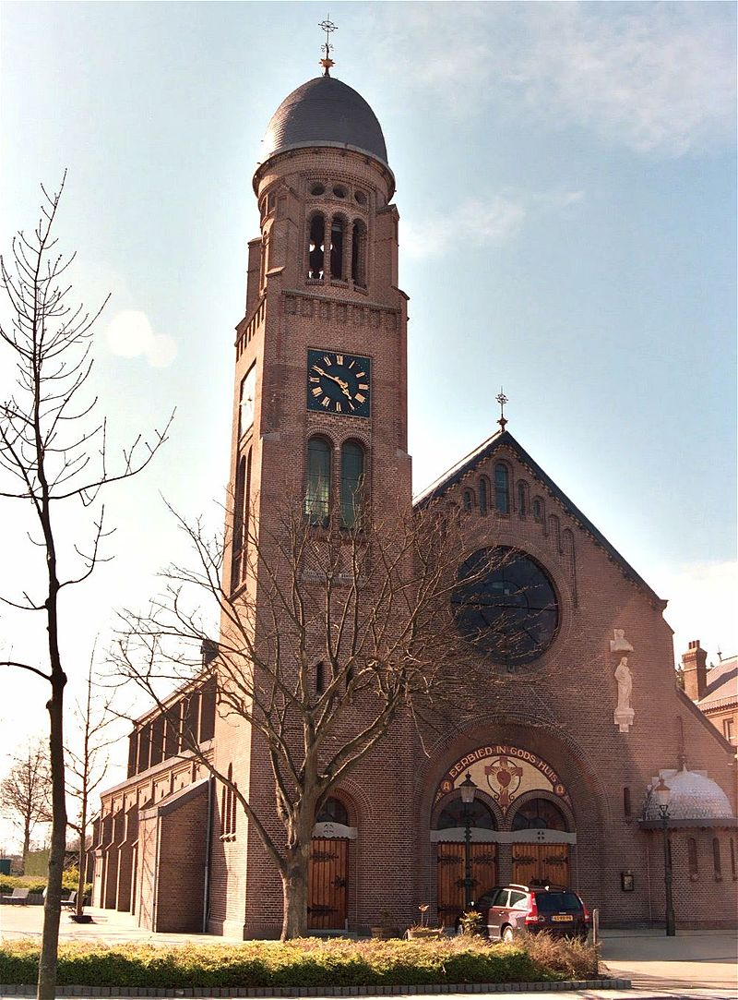
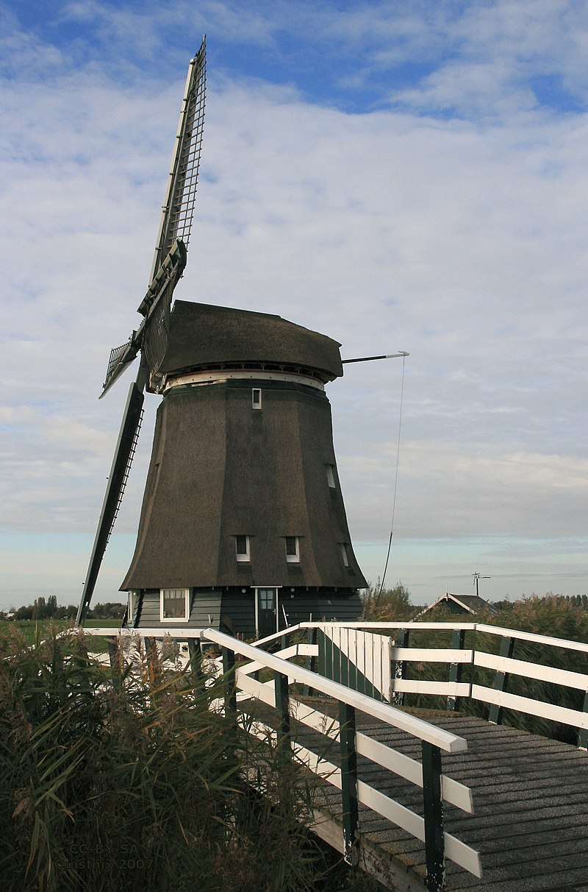

Het huidige Heerhugowaard is ontstaan als agglomeratie tussen de dorpen Zuid,
De Noord en 't Kruis, waarbij in eerste instantie Zuid als zelfstandige kern verdween en geheel opging
in Heerhugowaard, dat begon als een lintdorp langs de Middenweg, met uitlopers langs onder andere de Hondeweg
(thans Van Veenweg). 't Kruis groeide door uitbreiding in de jaren negentig van de twintigste eeuw steeds meer
aan bij Heerhugowaard. De Noord is nog een losliggend dorp, alleen het zuiden is opgegaan in Heerhugowaard.
Ook andere buurtschappen, zoals Butterhuizen worden langzaam steeds meer opgenomen in Heerhugowaard.
De gemeente Heerhugowaard fuseerde op 1 januari 2022 met buurgemeente Langedijk tot de gemeente Dijk en Waard.
 Rond het jaar 800 was het gebied dat nu de gemeente Heerhugowaard vormt bedekt met veen. Ontginning van het veen door de mens in combinatie met stormvloeden leidde ertoe dat in de regio vele meren ontstonden, waaronder de Grote Waert. Deze vormde samen met de Schermer ook een periode ongeveer één meer, waarbij het gedeelte van Heerhugowaard een waddengebied vormde met een soort van moeraslagune. Hier kwam een eind aan toen de oude lage dijk die er ooit was neergelegd en er in het meer deels nog lag, werd verhoogd. Zo ontstonden er twee afzonderlijke meren. Toen in de 17e eeuw particuliere investeerders besloten het meer droog te maken, was dat om landbouwgrond te creëren. In 1630 viel de 39,0 km² grote polder droog, waarna het land werd verdeeld onder de initiatiefnemers. In tegenstelling tot wat bij bijvoorbeeld de Beemster het geval was, viel de kwaliteit van de grond erg tegen. In 1674 overwoog men zelfs de polder weer vol te laten lopen, redenerend dat het gebied als viswater rendabeler zou zijn.